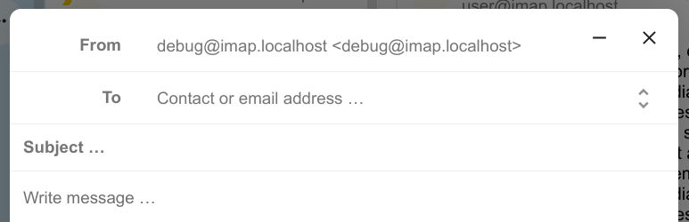

صندوق أسبقيات الوارد يحتوي على قسمين 2؛ "هامة" و "أخرى". سيتم تصنيف الرسائل تلقائيا باعتبارها "هامة" بحسب علاقتها برسائل أخرى هامة ذات علاقة بها. في البداية, ربما يتوجب عليك أن تقوم بتصنيف الرسائل الهامة يدويا حتى يتسنى للنظام أن يُدرّب نفسه تعلُّماّ من تصنيفك.
At the top of the envelope list in any mail layout, there is a search field shortcut for searching email subjects. Starting from version3.7, this shortcut allows you to search by subject, recipient (to), or sender (from) by default.
When you add your first recipient or contact in the "To" field, a right pane will appear displaying the saved profile details of that contact.
Adding a second contact will collapse the list, allowing you to select and expand any contact you added to view their details.
If you prefer to focus solely on writing in the composer, you can hide the right pane by clicking the expand icon in the top-right corner.
To show the right pane again, simply click the minimize icon in the same location.
يمكن تصغير النافذة الصورية في أي وقت عند تحرير رسالة جديدة أو تعديل مسودة من صندوق الصادر. فقط إضغط زر التصغير أعلى النافذة الصورية أو إضغط في أي مكان خارجها.

يمكن استعادة الرسالة المصغرة و عرضها بحجمها الأصلي بالضغط على المؤشر أسفل الشاشة
إضغط زر الإقفال في النافذة الصورية أو المؤشر في الركن السفلي للتوقف عن تحرير الرسالة. سيتم حفظ المسودة تلقائيّاً في صندوق مسوّدات الرسائل البريدية.
When a message has been composed and the "Send" button was clicked, the message is added to the outbox which can be found in the bottom left corner of the left sidebar.
You can also set the date and time for the send operation to a point in the future (see Scheduled messages)- the message will be kept in the outbox until your chosen date and time arrives, then it will be sent automatically.
The outbox is only visible when there is a message waiting to be handled by the outbox.
You can re- open the composer for a message in the outbox any time before the "send"- operation is triggered.
ملاحظة
When an error occurs during sending, three error messages are possible:
Could not copy to "Sent" mailbox
The mail was sent but couldn't be copied to the "Sent" mailbox. This error will be handled by the outbox and the copy operation will be tried again.
Mail server error
Sending was unsuccessful with a state than can be retried (ex: the SMTP server couldn't be reached). The outbox will retry sending the message.
Message could not be sent
Sending might or might not have failed. The mail server can't tell us the state of the message. Since the Mail app has no way to determine the state of the message (sent or unsent) the message will stay in the outbox and the account user has to decide how to proceed.
Upon creating a tag, a randomly assigned color is automatically chosen. Once the tag is saved, you have the flexibility to customize its color according to your preferences. This feature can be found on the Tag modal action menu.
بعض قوائم البريد و الجرائد تسمح بإيقاف الاشتراك بسهولة. عندما يكتشف تطبيق البريد رسائل من أمثال هؤلاء المرسلين، فإنه يُظهِرُ لك زر "إيقاف الاشتراك" بجوار معلومات المٌرسل. إضغط الزر لإيقاف اشتراكك في القائمة البريدية.
يؤدي إغفاء رسالة أو نَظْمَة من الرسائل إلى نقلها إلى صندوق بريد مخصص حتى يتم الوصول إلى التاريخ المحدد لانتهاء الإغفاءة؛ عندها يتم إرجاع الرسالة أو نَظْمَة الرسائل إلى صندوق البريد الأصلي.
إفتَح قائمة إجراءات المَظْرُوف envelope أو النَّظْمَة thread
إضغَط على إغفاءة Snoose
عيّن كم من الزمن ستكون إغفاءة الرسالة أو نظمة الرسائل
When you open a message in the Mail app, it proposes AI-generated replies. By simply clicking on a suggested reply, the composer opens with the response pre-filled.
ملاحظة
Please note that the feature has to be enabled by the administrator
ملاحظة
Supported languages depend on the used large language model
New in version 3.5: Autoresponder can follow system settings.
The autoresponder is off by default. It can be set manually, or follow the system settings. Following system settings means that the long absence message entered on the Absence settings section is applied automatically.
The Mail app will automatically remind you when an outgoing email did not receive a response.
Each sent email will be analyzed by an AI to check whether a reply is expected.
After four days all relevant emails will be shown in your priority inbox.
When clicking on such an email a button will be shown to quickly follow up with all recipients.
It is also possible to disable follow-up reminders for a sent email.
ملاحظة
Please note that the feature has to be enabled by the administrator.
The Mail app will check for potential phishing attempts and will display a warning to the user.
The checks are the following:
The sender address saved in the addressbook is not the same as the one in the mail account
The sender is using a custom email address that doesn't match the from address
The sent date is set in the future
Links in the message body are not pointing to the displayed text
The reply-to address is not the same as the sender address
ملاحظة
Please note that the warning does not mean that the message is a phishing attempt. It only means that the Mail app detected a potential phishing attempt.
The Mail app allows adding internal addresses and domains, and will warn the user if the address is not in the list, when sending and upon receiving a message.
To add an internal address:
Open the mail settings
Navigate to Privacy and security section
Enable the internal addresses by ckicjin on the checkbox